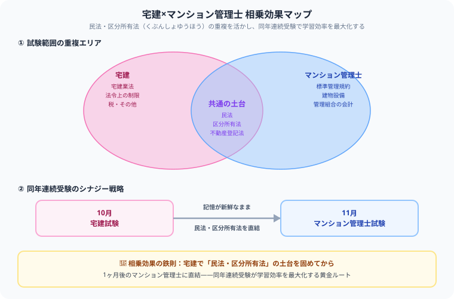

宅建 vs マンション管理士 どっちを先に取るべき？難易度・就職・転職を徹底比較【2026年版】
こんにちは、大谷です！僕は公認会計士試験の勉強を通じて、法律科目を「土台となる知識をどう使い回すか」という視点で見る癖がついています。宅建とマンション管理士も、実はまったく同じ発想で攻略できるんです。
宅建の「民法・区分所有法」は、そのままマンション管理士の得点源に直結します。バラバラに2つの資格を取るのではなく、「宅建で土台を固めて、記憶が新鮮なうちにマンション管理士へドッキングさせる」という戦略を取れば、勉強時間を大幅に圧縮できる。会計士試験で似たような科目間の知識の使い回しを日々やっている僕だからこそ言える、この2資格のドッキング戦略を熱く解説します！
また、記事の末尾のほうにある【いいねボタン】をポチッと押してもらえると、僕のモチベーション維持のために、めちゃくちゃ嬉しいです！
「不動産資格を取りたいが宅建とマンション管理士どちらから始めるべき？」「ダブルライセンスは本当に有利？」—— 不動産業界で人気の2資格を徹底比較します。試験内容が一部重複しているため、学習効率の観点からも正しい順番で取得する方が近道になります。
基本情報の比較
| 項目 | 宅地建物取引士（宅建） | マンション管理士 |
|---|---|---|
| 試験日 | 年1回（10月第3日曜日） | 年1回（11月最終日曜日） |
| 合格率 | 約15〜17% | 約9〜13% |
| 必要勉強時間 | 300〜400時間 | 500〜700時間 |
| 受験料 | 8,200円 | 9,400円 |
| 受験資格 | なし | なし |
| 主な活躍場所 | 不動産売買・賃貸会社 | マンション管理会社・管理組合 |
| 設置義務 | あり（5人に1人） | なし |
試験内容の比較
宅建試験の特徴
宅建試験は4択50問・2時間の試験です。「民法（権利関係）」「宅建業法」「法令上の制限」「税・その他」の4分野から出題されます。
- 宅建業法が最も重要で出題数も多い（20問）
- 民法（権利関係）は難易度が高いが14問と比重が高い
- 毎年合格基準点が変わる（例年35〜38点/50点）
- 法令・税制は暗記で対応できる部分が多い
マンション管理士試験の特徴
マンション管理士試験は4択50問・2時間の試験です。「マンション管理適正化法」「区分所有法」「管理組合の運営」「建物設備」など専門分野が多く含まれます。
- 宅建と重複する「民法・区分所有法」分野の知識が活用できる
- 「建物設備系（設備・構造）」の専門知識が必要
- 管理組合の運営・会計（財務）の知識が必要
- 合格基準点は概ね36〜38点/50点
就職・転職への効果の比較
宅建の就職・転職効果
- 不動産会社5社に1人の設置義務 → 求人が豊富
- 宅建士でないと重要事項説明・記名押印ができない
- 不動産業界への転職に必須に近い資格
- 資格手当：1〜5万円/月程度の会社が多い
- 取得難易度に対して転職効果が非常に高い「コスパ資格」
マンション管理士の就職・転職効果
- マンション管理会社・管理組合でのコンサル業務に評価される
- 設置義務がないため求人は宅建より少ない
- 分譲マンションの増加で今後需要増が見込まれる
- 管理業務主任者（マン管のやや下位資格）と組み合わせると強い
- 独立してマンション管理組合のコンサルタントとして活動できる

おすすめの取得順序
| パターン | 取得順序 | メリット |
|---|---|---|
| 不動産業界転職が優先 | 宅建のみ | 最短で転職・資格手当に活かせる |
| 不動産管理分野に進みたい | 宅建→管理業務主任者 | 管理業務主任者は宅建知識が流用できる |
| 最強の不動産コンサルを目指す | 宅建→管理業務主任者→マンション管理士 | トリプルライセンスで希少価値最高 |
| マンション管理専門家を目指す | 宅建→マンション管理士（同年） | 宅建の勉強が直後に役立つ |
比較で悩む人がよく引っかかる3つの落とし穴
- 「似ている資格だから」と同時に2つの対策を並行してしまう：宅建業法や建物設備など、それぞれ固有の分野の対策時間が足りなくなります。この記事で紹介したとおり、まず宅建で民法の土台を固めてからマンション管理士に進む方が効率的です。
- 試験範囲の重複を過信して、マンション管理士固有の分野を軽視してしまう：民法・区分所有法は共通していますが、管理組合の運営・会計や建物設備は宅建にはない専門分野です。重複部分だけで安心せず、固有分野の対策時間もきちんと確保してください。
- 宅建合格の余韻で、マンション管理士の難易度を甘く見てしまう：マンション管理士は宅建より合格率が低く、必要勉強時間も長い試験です。「宅建より簡単だろう」という油断は禁物です。
2つの不動産資格を武器にしようと、しっかり戦略から考えているあなたの姿勢は本当に立派です。宅建で土台を固め、マンション管理士へドッキングさせる王道ルートを進めば、必ず結果はついてきます。心から応援しています！この記事が少しでも力になったら、僕の執筆のモチベーション維持のために、この下にある【いいねボタン】をポチッと押してもらえると、めちゃくちゃ嬉しいです！